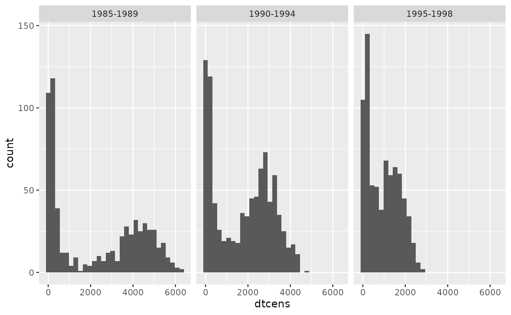
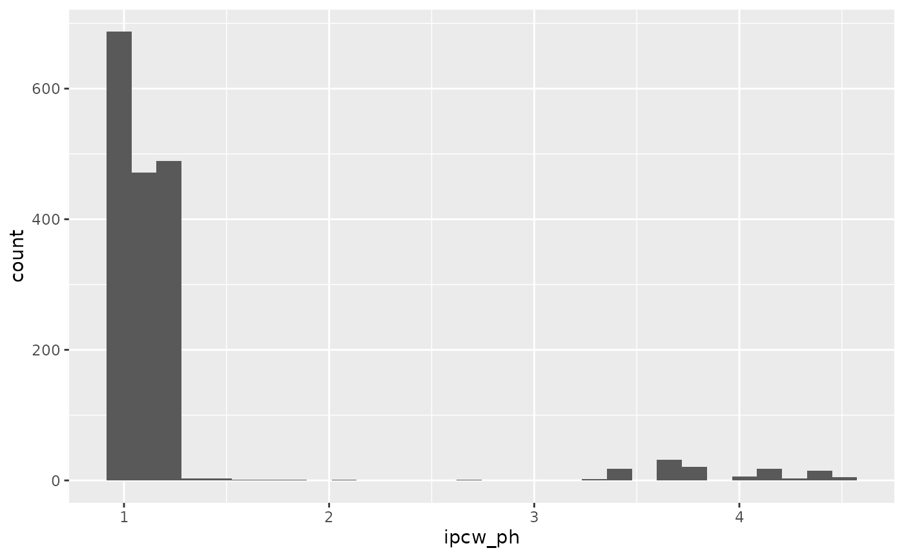
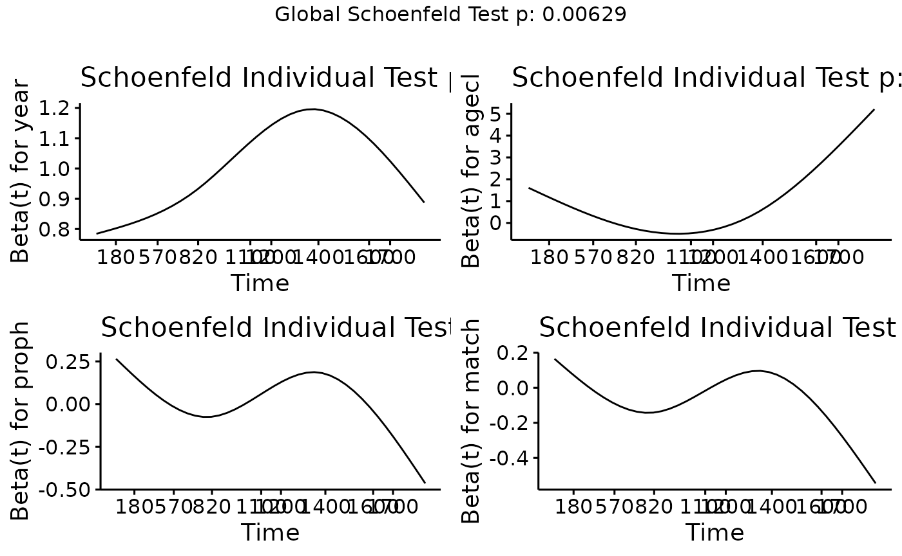
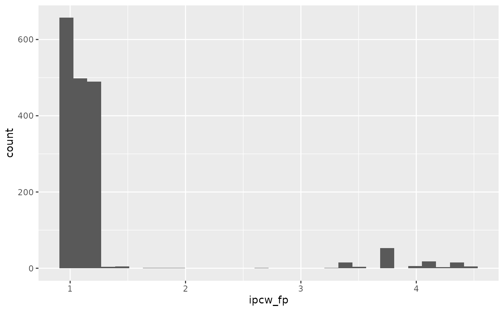

Sensitivity-analyses-for-IPCWs
Source:vignettes/articles/Sensitivity-analysis-for-IPCWs.Rmd
Sensitivity-analysis-for-IPCWs.RmdIntroduction
This vignette explores the sensitivty of the BLR-IPCW approach to the
estimation of the weights. The start of follow up is the day of the
transplant and the initial state is alive and in remission. There are
three intermediate events
(:
recovery,
:
adverse event, or
:
recovery + adverse event), and two absorbing states
(:
relapse and
:
death). This data was originally made available from the
mstate package (Wreede, Fiocco, and
Putter 2011). Please refer to the Overview
vignette for a more detailed description of this data.
This analysis is motivated by the fact that in the illustrative example in the Overview vignette, we saw a considerable difference in the estimated calibration curves from state into state when using either BLR-IPCW or pseudo-value approach. While all the other states show a similar level of calibration when using either method, which provides reassurance over their validity, this is not the case for state 3, and further investigation is required. One hypothesis for this difference is that a cox-proportional hazards model was used to estimate the weights when implemtning the BLR-IPCW approach, and it’s possible the proportional hazards assumption does not hold. We will therefore explore the validity of this assumption, and re-estimate the calibration curves using a flexible parametric survival model to estimate the weights.(Royston and Parmar 2002)
Exploring the assumption of proportional hazards in the model for estimating the IPCWs
A key variable which predicts the censoring mechanism is year of
transplant, year. Individuals who had their transplant more
recently have a shorter administrative censoring time, given they have a
shorter maximum follow up. We can view this by looking at the
distribution of maximum follow up time for each individual (this is the
time until either censoring, or entering an absorbing state
or
)
stratified by year.
Load libraries and functions:
##
## Attaching package: 'dplyr'## The following objects are masked from 'package:stats':
##
## filter, lag## The following objects are masked from 'package:base':
##
## intersect, setdiff, setequal, union
library(survival)
requireNamespace("survminer", quietly = TRUE)
library(survminer)## Loading required package: ggpubr##
## Attaching package: 'survminer'## The following object is masked from 'package:survival':
##
## myeloma
requireNamespace("flexsurv", quietly = TRUE)
library(flexsurv)Load data:
## id rec rec.s ae ae.s recae recae.s rel rel.s srv srv.s year agecl
## 1 1 22 1 995 0 995 0 995 0 995 0 1995-1998 20-40
## 2 2 29 1 12 1 29 1 422 1 579 1 1995-1998 20-40
## 3 3 1264 0 27 1 1264 0 1264 0 1264 0 1995-1998 20-40
## 4 4 50 1 42 1 50 1 84 1 117 1 1995-1998 20-40
## 5 5 22 1 1133 0 1133 0 114 1 1133 0 1995-1998 >40
## 6 6 33 1 27 1 33 1 1427 0 1427 0 1995-1998 20-40
## proph match dtcens dtcens_s
## 1 no no gender mismatch 995 1
## 2 no no gender mismatch 422 0
## 3 no no gender mismatch 1264 1
## 4 no gender mismatch 84 0
## 5 no gender mismatch 114 0
## 6 no no gender mismatch 1427 1## An object of class 'msdata'
##
## Data:
## id from to trans Tstart Tstop time status
## 1 1 1 2 1 0 22 22 1
## 2 1 1 3 2 0 22 22 0
## 3 1 1 5 3 0 22 22 0
## 4 1 1 6 4 0 22 22 0
## 5 1 2 4 5 22 995 973 0
## 6 1 2 5 6 22 995 973 0
t_eval <- 1826Look at maximum follow up:
ebmtcal |>
ggplot(aes(dtcens)) + geom_histogram() + facet_wrap(~year)## `stat_bin()` using `bins = 30`. Pick better value with `binwidth`.
When fitting a cox proportional hazards model to estimate the
weights, this will clearly violate the proportional hazards assumption
given there is differential follow up in each group. This is why we
opted to censor all individuals at 5-years follow up (1826 days) before
fitting this model. This is specified through the
w_max_follow argument in calib_msm.
We can calculate the weights here by running the
calc_weights function:
ebmtcal$ipcw_ph <- calc_weights(data_ms = msebmtcal,
data_raw = ebmtcal,
covs = c("year", "agecl", "proph", "match"),
t = t_eval, s = 0, j = 1,
max_follow = t_eval)$ipcwWe can view the distribution of these weights:
ebmtcal |>
ggplot(aes(ipcw_ph)) + geom_histogram()## `stat_bin()` using `bins = 30`. Pick better value with `binwidth`.## Warning: Removed 501 rows containing non-finite outside the scale range
## (`stat_bin()`).
These weights are estimated by fitting the following model:
ebmtcal_5y <- mutate(ebmtcal,
dtcens_s = case_when(dtcens > 1826 ~ 0,
TRUE ~ dtcens_s),
dtcens = case_when(dtcens > 1826 ~ 1826,
TRUE ~ dtcens))
model_ipcw_ph <- survival::coxph(survival::Surv(dtcens, dtcens_s) ~ year + agecl + proph + match, data = ebmtcal_5y)
model_ipcw_ph## Call:
## survival::coxph(formula = survival::Surv(dtcens, dtcens_s) ~
## year + agecl + proph + match, data = ebmtcal_5y)
##
## coef exp(coef) se(coef) z p
## year1990-1994 1.23753 3.44710 0.25132 4.924 8.48e-07
## year1995-1998 3.21074 24.79734 0.23772 13.506 < 2e-16
## agecl20-40 -0.08229 0.92101 0.11159 -0.737 0.461
## agecl>40 0.04593 1.04700 0.12506 0.367 0.713
## prophyes 0.01612 1.01625 0.11901 0.135 0.892
## matchgender mismatch -0.06660 0.93557 0.10722 -0.621 0.534
##
## Likelihood ratio test=617.3 on 6 df, p=< 2.2e-16
## n= 2279, number of events= 501Note there is still a very large hazard-ratio for the year 1995-1998 variable, although this is to be expected given the shorter follow up times.
Testing the proportional hazards assumption, we find this does not
hold for any of the predictor variables, although year is
no worse than the other variables.

We can therefore conclude that it is not the year
variable alone driving poor estimation of the weights, however, the
proportional hazards assumption does not hold. We will therefore proceed
to estimate the weights using a flexible parametric model and evaluate
whether there are any differences.
Flexible parametric model for estimating the inverse probability of censoring weights
We start by defining a function which will estimate the weights using a flexibe parametric survival model(Royston and Parmar 2002) (implemented in R using flexsurv(Jackson 2016)).
calc_weights_flexsurv <- function(data_ms, data_raw, covs = NULL, t, s, landmark_type = "state", j = NULL, max_weight = 10, stabilised = FALSE, max_follow = NULL, covs_tv = NULL){
### Modify everybody to be censored after time t, if a max_follow has been specified
if(!is.null(max_follow)){
### Stop if max follow is smaller than t
if (max_follow < t){
stop("Max follow cannot be smaller than t")
} else {
data_raw <- dplyr::mutate(data_raw,
dtcens_s = dplyr::case_when(dtcens < max_follow + 2 ~ dtcens_s,
dtcens >= max_follow + 2 ~ 0),
dtcens = dplyr::case_when(dtcens < max_follow + 2 ~ dtcens,
dtcens >= max_follow + 2 ~ max_follow + 2))
}
}
### Create a new outcome, which is the time until censored from s
data_raw$dtcens_modified <- data_raw$dtcens - s
### Save a copy of data_raw
data_raw_save <- data_raw
### If landmark_type = "state", calculate weights only in individuals in state j at time s
### If landmark_type = "all", calculate weights in all uncensored individuals at time s (note that this excludes individuals
### who have reached absorbing states, who have been 'censored' from the survival distribution is censoring)
if (landmark_type == "state"){
### Identify individuals who are uncensored in state j at time s
ids_uncens <- base::subset(data_ms, from == j & Tstart <= s & s < Tstop) |>
dplyr::select(id) |>
dplyr::distinct(id) |>
dplyr::pull(id)
} else if (landmark_type == "all"){
### Identify individuals who are uncensored time s
ids_uncens <- base::subset(data_ms, Tstart <= s & s < Tstop) |>
dplyr::select(id) |>
dplyr::distinct(id) |>
dplyr::pull(id)
}
### Subset data_ms and data_raw to these individuals
data_ms <- data_ms |> base::subset(id %in% ids_uncens)
data_raw <- data_raw |> base::subset(id %in% ids_uncens)
### Assign degree of freedom for baseline hazard
baseline_df <- 3
### Create formula for flexible parametric model
form <- as.formula(paste("survival::Surv(",
"dtcens_modified",
",",
"dtcens_s",
") ~",
paste(unlist(covs), collapse = "+")))
if(is.null(covs_tv)) {
cens_model <- flexsurv::flexsurvspline(
formula = form,
data = data_raw,
k = baseline_df,
scale = "hazard"
)
} else {
covs_tv_list <- vector("list", length = baseline_df+1)
names(covs_tv_list) <- paste("gamma", 1:(baseline_df+1), sep = "")
covs_tv_list[paste("gamma",
1:(baseline_df+1),
sep = "")] <- paste("~",
paste(unlist(covs_tv),
collapse = "+"))
cens_model <- flexsurv::flexsurvspline(
formula = form,
anc = lapply(covs_tv_list, as.formula),
data = data_raw,
k = baseline_df,
scale = "hazard"
)
}
### Identify individuals who entered absorbing states or were censored prior to evaluation time
obs_absorbed_prior <- which(data_raw_save$dtcens <= t & data_raw_save$dtcens_s == 0)
obs_censored_prior <- which(data_raw_save$dtcens <= t & data_raw_save$dtcens_s == 1)
###
### Now create unstabilised probability of (un)censoring weights
### Note that weights are the probability of being uncensored, so if an individual has low probability of being uncesored,
### the inervse of this will be big, weighting them strongly
###
### First etsimate all individuals a weight of the probability of being uncensored at time t
data_raw_save$pcw <- as.numeric(predict(cens_model, newdata = data_raw_save, type = "surv", times = t - s)$.pred_survival)
### Now we must estimate survival probabilities at the times individuals entered absorbing states prior to t (t - s for landmarking)
### Identify who these individuals are
data_raw_absorbed_prior <- data_raw_save[obs_absorbed_prior, ]
### Estimate survival probability at time t (t - s for landmarking)
data_raw_save$pcw[obs_absorbed_prior] <- unlist(lapply(1:nrow(data_raw_absorbed_prior),
function(x) {dplyr::pull(predict(cens_model,
newdata = data_raw_absorbed_prior[x, ],
times = as.numeric(data_raw_absorbed_prior[x, "dtcens_modified"]),
type = "survival"),
.pred_survival)}
))
### For individuals who were censored prior to t, assign the weight as NA
data_raw_save$pcw[obs_censored_prior] <- NA
### Invert these
data_raw_save$ipcw <- 1/data_raw_save$pcw
### Create output object
data_raw_save$ipcw <- pmin(data_raw_save$ipcw, max_weight)
output_weights <- data.frame("id" = data_raw_save$id, "ipcw" = data_raw_save$ipcw)
return(output_weights)
}We then use this function to calculate the weights:
ebmtcal$ipcw_fp <- calc_weights_flexsurv(data_ms = msebmtcal,
data_raw = ebmtcal,
covs = c("year", "agecl", "proph", "match"),
t = t_eval, s = 0, j = 1,
max_follow = t_eval)$ipcwWe can view the distribution of these weights:
ebmtcal |>
ggplot(aes(ipcw_fp)) + geom_histogram()## `stat_bin()` using `bins = 30`. Pick better value with `binwidth`.## Warning: Removed 501 rows containing non-finite outside the scale range
## (`stat_bin()`).
We see there is very little difference compared to when the weights were estimated using the cox-proportional hazards model.
Next we use this function to estimate the calibration curves. This is
implemented as the input to argument w_function in
calib_msm. The function calc_weights_flexsurv
also has an extra argument (covs_tv) compared to the
default function for estimating the weights (calc_weights).
This variable is used to specify the variables which are modelled as
time-varying coefficients (time-varying hazard ratio), wherein the
coefficient is modelled as a spline term (function uses 3 degrees of
freedom) as described in Royston and Parmar
(2002). This variable should also be specified when running
calib_msm. For comparison, we plot the calibration curves
using the default internal approach (cox proportional hazards). First
estimate the calibration curves:
### Define predicted transition probabilities out of state j = 1 at time s = 0
tp_pred_s0 <- tps0 |>
dplyr::filter(j == 1) |>
dplyr::select(any_of(paste("pstate", 1:6, sep = "")))
### Estimate calibration curves
# Default, coxph function for estimating the weights
dat_calib_blr_coxph <-
calib_msm(data_ms = msebmtcal,
data_raw = ebmtcal,
j=1,
s=0,
t = t_eval,
tp_pred = tp_pred_s0,
calib_type = "blr",
curve_type = "rcs",
rcs_nk = 3,
w_covs = c("year", "agecl", "proph", "match"),
w_max_follow = 1826)
# Using flexible parametric function for estimating the weights
dat_calib_blr_flexsurv <-
calib_msm(data_ms = msebmtcal,
data_raw = ebmtcal,
j=1,
s=0,
t = t_eval,
tp_pred = tp_pred_s0,
calib_type = "blr",
curve_type = "rcs",
rcs_nk = 3,
w_covs = c("year", "agecl", "proph", "match"),
w_function = calc_weights_flexsurv,
w_max_follow = 1826,
covs_tv = list("year"))Plot the calibration curves:
BLR-IPCW calibration curves when using a cox proportional hazards model to estimate the weights
BLR-IPCW calibration curves when using a flexible parametric model to estimate the weights
There is very little difference, and the estimated calibration curves are not very sensitive to the choice of model to estimate the inverse probability of censoring weights. The difference between the BLR-IPCW and pseudo-calibration curves is therefore unlikely to be driven by this. We therefore turn our attention to the assumption that the outcome and censoring distributions are conditionally independent given the weights.
Conditional independence of the censoring mechanism and the outcome process
BLR-IPCW and MLR-IPCW approaches assume that the outcome, , is independent from the censoring mechanism in the re-weighted population. This can be thought of as conditional independence between the outcome and censoring mechanism given the weights. We will explore this assumption with a number of steps.
Exploration of the rate of censoring out of each state
We start by looking at all individuals that pass through states 1, 2, 3 and 4, and see what proportion of individuals remain in these states until they are censored:
ebmtcal |>
summarise(
n = n(),
prop.cens = mean(as.numeric(ae.s == 0 & rec.s == 0 & recae.s == 0 & srv.s == 0 & rel.s == 0)))## n prop.cens
## 1 2279 0.1456779
ebmtcal |>
filter(rec.s == 1) |>
summarise(
n = n(),
prop.cens = mean(as.numeric(recae.s == 0 & srv.s == 0 & rel.s == 0)))## n prop.cens
## 1 1218 0.3341544
ebmtcal |>
filter(ae.s == 1) |>
summarise(
n = n(),
prop.cens = mean(as.numeric(recae.s == 0 & srv.s == 0 & rel.s == 0)))## n prop.cens
## 1 1134 0.1948854
ebmtcal |>
filter(recae.s == 1) |>
summarise(
n = n(),
prop.cens = mean(as.numeric(srv.s == 0 & rel.s == 0)))## n prop.cens
## 1 660 0.630303We see far fewer individuals remain in the adverse event state (19%) until they are censored compared to the other states (33.4% and 63.3%). However, it’s difficult to interpret these, as censoring is heavily impacted by the competing risks of other events.
A more information measure is to look at the proportion of individuals that are censored in each state, that are censored within 5-years.
ebmtcal |>
filter(ae.s == 0 & rec.s == 0 & recae.s == 0 & srv.s == 0 & rel.s == 0) |>
summarise(n = n(), mean.fup = mean(dtcens),
mean.fup.lower.1826 = mean(dtcens < 1826))## n mean.fup mean.fup.lower.1826
## 1 332 2392.286 0.3795181
ebmtcal |>
filter(rec.s == 1 & recae.s == 0 & srv.s == 0 & rel.s == 0) |>
summarise(n = n(), mean.fup = mean(dtcens),
mean.fup.lower.1826 = mean(dtcens < 1826))## n mean.fup mean.fup.lower.1826
## 1 407 2259.007 0.4152334
ebmtcal |>
filter(ae.s == 1 & recae.s == 0 & srv.s == 0 & rel.s == 0) |>
summarise(n = n(), mean.fup = mean(dtcens),
mean.fup.lower.1826 = mean(dtcens < 1826))## n mean.fup mean.fup.lower.1826
## 1 221 3082.977 0.1764706
ebmtcal |>
filter(recae.s == 1 & srv.s == 0 & rel.s == 0) |>
summarise(n = n(), mean.fup = mean(dtcens),
mean.fup.lower.1826 = mean(dtcens < 1826))## n mean.fup mean.fup.lower.1826
## 1 416 2366.279 0.3894231We see that of individuals that are censored in states 1, 2 and 4, about 40% of these are censored prior to 5-years. However, for individuals that are censored in the adverse event state (state 3), only 17.6% of these are censored within 5-years. So in the data, we are seeing that individuals that remain in the adverse event state, are less likely to be censored. While we cannot fully understand the data observation process, it is not a stretch to imagine individuals who had had an adverse event, and not recovered, would be monitored for longer periods of time, resulting in fewer being censored within 5-years.
Is this differential censoring driven by differences in baseline predictors?
At this point, we should consider the possibility that year was highly predictive of adverse event, and we know that year is highly predictive of follow up time too. In this case, the relationship would be explained by a variable available at baseline, however, we see that adverse events are quite similar across different year categories:
## # A tibble: 3 × 2
## year `mean(ae.s)`
## <fct> <dbl>
## 1 1985-1989 0.475
## 2 1990-1994 0.522
## 3 1995-1998 0.487We also look at the distribution of the other variables across those who do and do not have an adverse event.
## # A tibble: 3 × 2
## agecl `mean(ae.s)`
## <fct> <dbl>
## 1 <=20 0.445
## 2 20-40 0.514
## 3 >40 0.517## # A tibble: 2 × 2
## proph `mean(ae.s)`
## <fct> <dbl>
## 1 no 0.520
## 2 yes 0.428## # A tibble: 2 × 2
## match `mean(ae.s)`
## <fct> <dbl>
## 1 no gender mismatch 0.499
## 2 gender mismatch 0.492It is therefore looking like this cannot be explained by information available at baseline.
Distribution of weights by outcome state at 5-years
If individuals in state 3 are less likely to be censored than those in states 1, 2 and 4, then individuals who have spent a long time in state 3 do not need to be upweighted as much. Using the inverse probability of censoring weights estimated earlier, we take the mean weight, grouped by the outcome state individuals are in at 5-years.
We start by identifying which state each individual is in at 5-years.
### Extract which state individuals are in at time t
ids_state_list <- vector("list", 6)
for (k in 1:6){
ids_state_list[[k]] <- calibmsm:::extract_ids_states(msebmtcal, tmat = attributes(msebmtcal)$trans, k, t_eval)
}
### Create a variable to say which state an individual was in at the time of interest
## Create list containing the relevant data
v1 <- ebmtcal$id
m1 <- outer(v1, ids_state_list, FUN = Vectorize('%in%'))
state_poly <- lapply(split(m1, row(m1)), function(x) (1:6)[x])
## Change integer(0) values to NA's
idx <- !sapply(state_poly, length)
state_poly[idx] <- NA
## Add to ebmtcal
ebmtcal <- dplyr::mutate(ebmtcal, state_poly = unlist(state_poly),
state_poly_fac = factor(state_poly))Then calculate mean weight within each group:
## # A tibble: 7 × 2
## state_poly mean_weight
## <int> <dbl>
## 1 1 1.32
## 2 2 1.52
## 3 3 1.47
## 4 4 1.64
## 5 5 1.05
## 6 6 1.03
## 7 NA NAGiven the differential rate of censoring within 5-years (17% vs 40%), we would require weights for individuals in state 3 at 5-years to be considerably lower than for states 1, 2 and 4. Note that this is only a proxy, as individuals in state 4 may have spent some time in state 3, however, we would expect bigger differences than what is observed here. It is therefore likely that the inverse probability of censoring weights are incorrect, however, not due to a violation of the proportional hazards assumption as previously thought.
The BLR-IPCW and MLR-IPCW approaches assume conditional independence between the outcome and censoring distribution given the weights. This is the underlying assumption upon which inverse probability of censoring is based. So far, we have proposed estimating the weights conditional on a vector of covariates collected at baseline, Z. When the weights are estimated by modelling the time until censoring conditional on a vector of baseline covariates Z, this effectively becomes conditional independence given (a function of) Z. Indeed, if this assumption holds, the proposed methodology works fine, as was shown trough simulations.(Pate et al. 2024) However, something that has not been considered is when the censoring mechanism changes depending on which state an individual is in. In this setting, conditional dependence between the outcome and the censoring mechanism given weights estimated from baseline covariates alone may be hard to achieve, unless the baseline covariates are highly predictive of the states upon which individuals will enter. We believe this is likely happening in this setting. It’s possible this could be mitigated by using more complex models to estimate the IPCWs, such as a latent class model, where the probability of censoring is dependent on the outcome state that an individual is in. However, much deeper thought is required around this notion, and simulation studies would be required to establish the performance of such an approach. Note that when the probability of censoring changes depending on the outcome state an individual is present in, we do not believe this will violate the assumption of the Aalen-Johansen estimator, which require “subjects who are censored at time t should be representative of all the study subjects who remained at risk at time t with respect to their survival experience”.(Kleinbaum and Klein 2012). However, again, it would be beneficial to establish this through a simulation study.
For now, we would like to emphasise to users that in order to implement the BLR-IPCW and MLR-IPCW approaches, it is essential for the outcome and censoring mechanism to be conditionally independent given some set of baseline covariates , whether this is via the weighting in IPCW, or the grouping in the pseudo-value approach. If the censoring probability, or observation process, changes depending on the outcome state that an individuals is in, this can cause bias in the estimation of the calibration curves unless properly accounted for when estimating the weights.